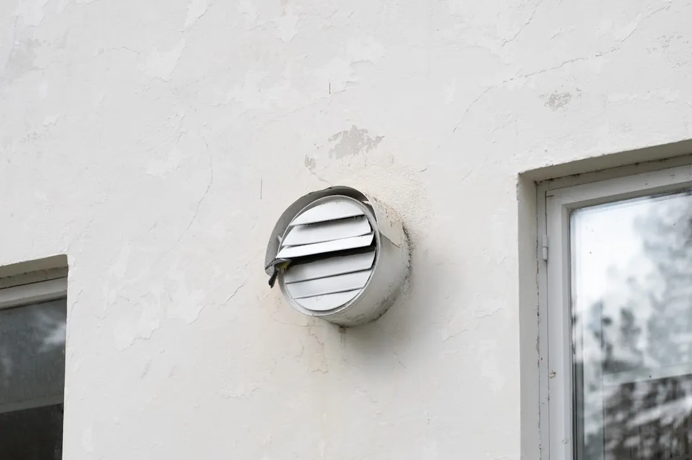

Clogged dryer vents raise fire risk and drive up energy bills — here’s what our dryer vent cleaning service in Atlanta actually involves.
Dryer vent cleaning removes years of trapped lint from the exhaust line that runs from your dryer to the outside of your home. Even with a clean lint trap after every load, fine lint particles pass through and coat the inside of the vent duct over time, especially on longer runs common in two-story suburban homes throughout the metro.

A technician disconnects the vent line at the dryer and runs a rotating brush or air-whip tool through the full length of the duct, pulling loosened lint out with a vacuum at the exterior vent hood. Both ends of the connection are inspected and reattached, and the exterior vent flap is checked to confirm it opens freely.
Lint traps only catch a portion of the lint produced during a drying cycle — the rest passes through as fine particles that stick to the interior walls of the vent duct, especially at bends and joints. Longer vent runs, more bends, and higher laundry volume all speed up this buildup, which is why homes with the washer/dryer far from an exterior wall tend to need service more often.
Standalone dryer vent cleaning in the Atlanta metro runs $100 to $175. The main factors are the length of the vent run, the number of bends between the dryer and the exterior, and whether the vent exits through a side wall (easier access) or through the roof (harder access, more labor time). Bundling it with a full duct cleaning appointment usually brings the add-on price down to $75–$125.
Right for you if the dryer is your only concern — slow drying times, heat buildup, or it’s simply been over a year since the last cleaning and your HVAC ducts were serviced recently.
Right for you if you’re also seeing dust at HVAC vents, a musty smell tied to the AC (not just the dryer), or haven’t had either system cleaned in 3+ years. Bundling both saves on labor cost per visit.
If clothes take longer than one full cycle to dry, the outside of the dryer feels unusually hot, or you notice a burning smell during use, your vent line likely has significant lint buildup. Homes with longer vent runs from the laundry room to the exterior wall — common in Atlanta’s larger suburban floor plans — tend to clog faster than homes with a short, direct run.
A standalone dryer vent cleaning in Atlanta typically costs $100 to $175, or $75 to $125 when bundled with a full air duct cleaning appointment. Longer vent runs or vents routed through a roof rather than a side wall can add to the cost.
Most manufacturers and fire safety organizations recommend cleaning dryer vents once a year. Households that do more than 5 loads of laundry a week, or have pets that shed heavily, often need it every 6 to 9 months instead.
Yes — lint is highly flammable, and a clogged vent traps heat inside the dryer and vent line, which is one of the leading causes of residential dryer fires nationally. Regular vent cleaning removes this fuel source before it becomes a hazard.
Also dealing with dusty vents or a musty smell from your AC? See our full list of services or head back to our home page for the full duct cleaning process.
Call now for a free estimate on dryer vent cleaning in Atlanta.